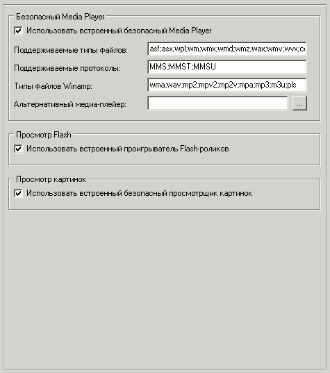

Наиболее важные опции на этой вкладке:
Безопасный Media Player
Можно использовать встроенный проигрыватель Media или же MediaPlayerClassic, PowerDVD (безопасную работу которых обеспечивает шелл).
При использовании безопасного Media Player можно указать типы файлов и протоколы для установки ассоциации с ним.
Список "Типы файлов Winamp" перечисляет те файлы, с которыми не будет ассоциироваться безопасный Media Player, если ассоциация на них установлена Winamp'ом.
Также можно использовать альтернативный плейер вместо встроенного, путь к exe-файлу которого нужно установить в соотв. поле. Оставьте поле пустым для использования встроенного проигрывателя. Для использования альтернативного плейера обязательно должна быть включена опция "Использовать встроенный безопасный Media Player". В качестве альтернативного проигрывателя рекомендуется использовать Media Player Classic.
Просмотр Flash
Безопасный просмотр .swf - файлов
Просмотр картинок
Безопасный просмотр .jpg, .bmp, .png, .gif, .tiff - файлов с различными опциями